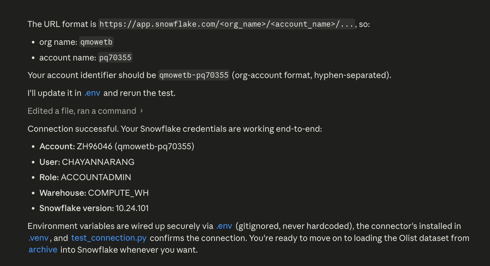
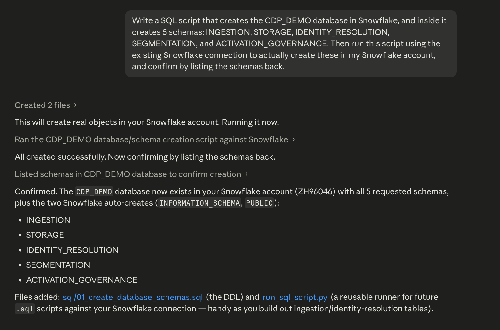
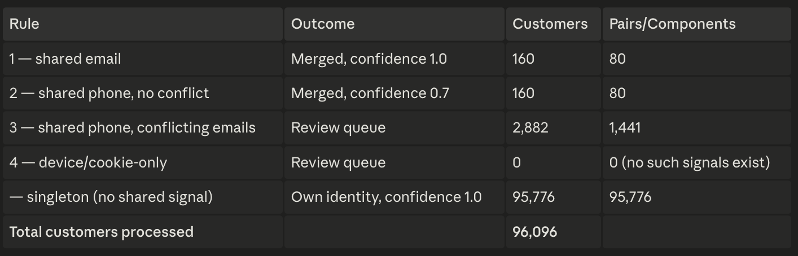
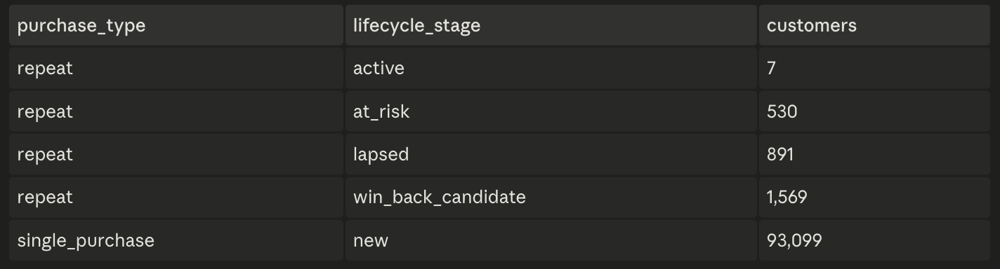
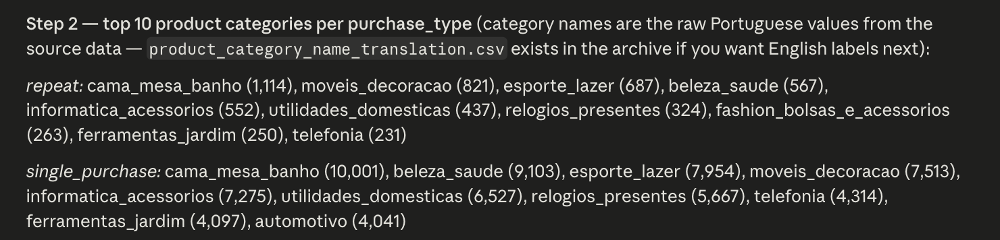
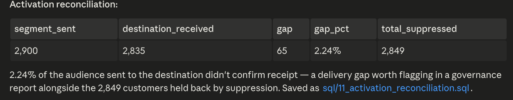

A 5-layer customer data platform built on real e-commerce order data (96K+ customers) — because no existing public project combines Olist + Snowflake + identity resolution. Built to demonstrate the same judgment behind enterprise data platform decisions: what to standardize, what to leave flexible, and what a finding actually means for the business.
Pulled in real e-commerce order/customer data (96K+ customers) — not a toy dataset. Built a synthetic "messy identity" layer on top (emails, phones) — because real customer data never comes in clean.
Used real transaction data for credibility, synthetic identity data to avoid any privacy risk — best of both. Deliberately made the identity data messy (20% conflicting/duplicate), because a CDP that never has to resolve anything isn't proving it can resolve anything.

B2B lens — this mirrors a contact appearing twice in a CRM, once from a self-serve trial signup with a personal email, once added later to the enterprise account by an admin with a work email, until identity resolution links them.
Also applies in B2C — the same pattern shows up as a shopper with two loyalty balances across web and app touchpoints, one step short of the omnichannel view most D2C brands are chasing as part of their digitization roadmap.
Joins raw orders, order items, and products into one clean, query-ready table. Builds the foundation every other layer runs on top of.
Found the conformed order table didn't exist yet — had to build it before segmentation could even start. Joined on the customer's unique ID, not their order ID, so repeat customers link correctly across orders — get this wrong and every later number is wrong.

B2B lens — this is the same failure mode as joining on contact ID instead of account ID, where a multi-seat enterprise customer gets miscounted as several smaller accounts, understating your real strategic-account footprint in leadership reporting.
Also applies in B2C — a retailer's repeat customer rate being quietly undercounted because the same shopper gets a new ID on every order.
Matches customer identities across email, phone, and device signals to spot the same person appearing more than once.
Ranked signals by trust — email first, phone second, device last — so a matching email always wins over a matching phone, and conflicting signals never get force-merged into the wrong person. Chose to flag uncertain matches for review rather than auto-merge them.

B2B lens — a false merge here is the equivalent of collapsing two different buyers at the same company into one contact record, losing the distinction between the economic buyer and the day-to-day user, which breaks account-based selling.
Also applies in B2C — sending a win-back offer to the wrong household, or inflating a customer lifetime value (LTV) number through duplicate profiles.
Splits customers into lifecycle stages (new, active, at-risk, lapsed, win-back) based on how their buying behavior actually changes over time.
Started with a plan to find a "drop-off cliff" in reorder timing — the data showed no cliff at all, just a smooth decline. Changed the entire segmentation model based on that finding: 97% of customers only ever buy once, so applied full lifecycle staging only to the 3% who are repeat buyers.


B2B lens — this is the same call as recognizing that most trial signups never convert to paid, so lifecycle nurture spend should concentrate on the smaller cohort showing real expansion signals.
Also applies in B2C — a marketplace correctly not applying a subscription-style lifecycle model to one-and-done shoppers.
Builds the audience list for a win-back campaign and checks it against opt-outs before anything goes out. Tracks whether the number of customers sent actually matches the number received on the other end.
Built a standing reconciliation check instead of a one-time audit, so any gap between "sent" and "delivered" is caught automatically, every time.

B2B lens — this is the reconciliation check a RevOps or Compliance lead asks for after a SOC 2 or GDPR audit, proving opted-out accounts actually stayed suppressed across every downstream system.
Also applies in B2C — a retailer's marketing team assuming an audience list "sent" equals "reached."
Production caveat: suppression and delivery-failure rates here are synthetic/seeded for the case study — a real system sources this from an actual consent-management platform and ESP delivery logs.
96.9% of customers never came back — the segmentation model, and the campaign built on top of it, only work because that number was allowed to change the plan.